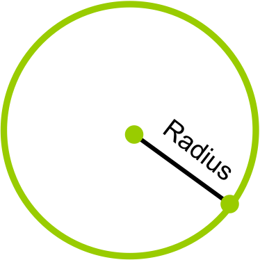

In deze lesbrief gaan we voor het eerst zelf SVG elementen aanmaken! Maar eerst nog een voorbeeld van een implementatie in D3.js, zoals we aan het begin van elke lesbrief doen. Zoals te verwachten is de grafiek hier onder van de grote held Mike Bostock met zijn Force Directed Graph!
Op dit moment wordt er druk gewerkt aan D3! Dat betekent wel dat de laatste versie mogelijk wat instabiel is. Dit houdt in dat de code die je vandaag in versie vier schrijft, mogelijk over een jaar niet meer werkt omdat bepaalde functies anders genoemd zijn. Hierdoor gebruiken wij voorlopig nog even de stabiele versie 3, en gaan we aan het eind van de module in op versie 4 en de verschillen tussen de versies. Hou dus in je achterhoofd dat als je op internet gaat kijken naar voorbeelden dat sommige voorbeelden in versie 3 en sommige in versie 4 staan! (Zo is het voorbeeld hierboven in versie 4 geschreven.) Mocht je alvast benieuwd zijn naar de veranderingen tussen de versies kan je op de knop hier onder klikken.
D3 veranderingen v3/v4Zoals al eerder gezegd gaan we in deze lesbrief zelf SVG elementen maken m.b.v. D3.js. Maar eerst gaan we even kijken naar hoe we een SVG kunnen maken in gewoon HTML. Bij deze voorbeelden heb ik de SVG's een border gegeven, zodat je kunt zien hoe groot het element is.
<!DOCTYPE html>
<!-- Dit is een normale HTML file -->
<html>
<head>
<title>SVG, voorbeeld</title>
</head>
<body>
<!-- Een SVG element -->
<svg>
<!-- Met erin een rect van 100 bij 100 px -->
<!-- rect staat voor rectangle, wat rechthoek betekent -->
<rect width="100" height="100" ></rect>
</svg>
</body>
</html>
Een rechthoek van 100x100 pixels!
We hebben nu een rect gemaakt! Er is alleen één groot probleem, als we de rect groter maken (probeer maar!). Als je de rect bijvoorbeeld 250 bij 250 pixel maakt, zie je helemaal geen vierkant maar een rechthoek. Dit komt omdat we de SVG zelf geen grootte hebben gegeven. Op het moment dat je dit vergeet geeft de browser zelf een hoogte aan je SVG waardoor het tekengebied voor je rect als het ware beperkt wordt. Als je de SVG zelf ook een height en een width mee geeft kan je zien dat we dan wel een mooi vierkantje krijgen!
Zoals je ziet is dit geen mooi vierkantje, terwijl hij wel de afmeting 250x250 heeft!
<!DOCTYPE html>
<!-- Dit is een normale HTML file -->
<html>
<head>
<title>SVG, voorbeeld</title>
</head>
<body>
<!-- Een SVG element met hoogte/breedte 250px -->
<svg width="250" height="250" >
<!-- Met erin een rect van 250 bij 250 px -->
<!-- rect staat voor rectangle, wat rechthoek betekent -->
<rect width="250" height="250" ></rect>
</svg>
</body>
</html>
Nu we een grootte aan de SVG zelf hebben gegeven zie je dat de rect nu wel mooi vierkant is.
Nu we dit weten kunnen we zelfs wat coördinaten mee geven! Als we bijvoorbeeld een tekengebied willen van 250 bij 250 pixels, en een vierkantje (10x10px) willen in de linker bovenhoek gaat dat bijvoorbeeld zo.
<!DOCTYPE html>
<html>
<head>
<title>SVG, voorbeeld coördinaten</title>
</head>
<body>
<!-- Een SVG element met hoogte/breedte 250px -->
<svg width="250" height="250" >
<!-- Met erin een rect van 250 bij 250 px -->
<!-- rect staat voor rectangle, wat rechthoek betekent -->
<rect x="10" y="10" width="10" height="10" ></rect>
</svg>
</body>
</html>
Zoals je kunt zien hebben we het blokje nu 10 pixels naar beneden en 10 pixels naar rechts gezet! Anders zou hij op het zelfde plekje staan als het groene blokje. SVG's tellen hun coördinaten vanuit hun linker bovenhoek, net als bij het lezen van een boek. Dus als we een vierkantje willen tekenen, geef de coördinaten dan dus denkend vanuit de linker bovenhoek (dit wordt ook wel het [0,0] punt genoemd). Onthoud dit want dit wordt later erg belangrijk!
Nu we blokjes kunnen maken, kunnen we deze vervolgens ook gaan kleuren. Zo kunnen we bijvoorbeeld een simpele versie van het windows logo na maken.
<!DOCTYPE html>
<html>
<head>
<title>SVG, voorbeeld kleuren</title>
</head>
<body>
<!-- Een SVG element met hoogte/breedte 250px -->
<svg width="250" height="250" >
<!-- Met erin een rect van 250 bij 250 px -->
<!-- rect staat voor rectangle, wat rechthoek betekent -->
<rect x="0" y="0" width="100" height="100" fill="red" ></rect>
<rect x="120" y="0" width="100" height="100" fill="green" ></rect>
<rect x="0" y="120" width="100" height="100" fill="blue" ></rect>
<rect x="120" y="120" width="100" height="100" fill="yellow" ></rect>
</svg>
</body>
</html>
Nu we blokjes kunnen kleuren en verplaatsen kunnen we al een soort logo maken.
Maar wat in HTML kan, kunnen we ook in D3! Als we het in het vervolg hebben over code gaat het voortaan over JavaScript. Je HTML zal er dus vervolgens zo uit zien:
<!DOCTYPE html>
<!-- Dit is de template voor de komende HTML opdrachten -->
<html>
<head>
<title>D3 HTML voorbeelden</title>
<!-- D3 inladen -->
<script src="https://d3js.org/d3.v3.min.js" charset="utf-8"></script>
<!-- Inladen van mijn JavaScript code -->
<script src="js/mijn_code.js" charset="utf-8"></script>
</head>
<body>
<!-- De div die we straks nodig hebben om voorbeeld aan te appenden. -->
<div id="voorbeeld"><div>
</body>
</html>
Nu we een template HTML pagina hebben, kunnen we ons verdiepen in JavaScript D3.js. Zo gaan we nu eerst een blok maken op onze pagina. Zie dat we i.p.v. elke keer svgContainer aanroepen om een attribuut te veranderen, gewoon meteen alle attributen eraan kunnen plakken. Dit noemen we "method chaining". Hierbij kan je dus een keten maken met attributen die je wilt toekennen aan je selectie, zolang je de punt-komma (;) pas aan het einde van de keten zet. Om het verschil tussen wel of geen "method chaining" te gebruiken duidelijk te maken staat hier onder links een voorbeeld met, en rechts een voorbeeld zonder method chaining. Zoals je ziet maakt het nogal verschil in de hoeveelheid code en hoe vaak een variabele aangeroepen moet worden.
// Maak de SVG container
var svgContainer = d3.select("#voorbeeld").append("svg")
.attr("width", 200)
.attr("height", 200);
// Teken de rechthoek
var rectangle = svgContainer.append("rect")
.attr("x", 150)
.attr("y", 50)
.attr("width", 50)
.attr("height", 140);
// Maak de SVG container
var svgContainer = d3.select("#voorbeeld");
svgContainer.append("svg");
svgContainer.attr("width", 200);
svgContainer.attr("height", 200);
// Teken de rechthoek
var rectangle = svgContainer.append("rect");
rectangle.attr("x", 150);
rectangle.attr("y", 50);
rectangle.attr("width", 50);
rectangle.attr("height", 140);
Zoals je kunt zien zie de code aan de linkerkant er een stuk overzichtelijker uit. Het scheelt je aardig veel code om het met method chaining te doen! Hier onder zie je hoe de code van net er uit zal zien op de browser.
Behalve de vierhoeken die je kan appenden kan je natuurlijk ook een circle appenden. Zo kan je bijvoorbeeld al gemakkelijk een gezichtje maken. Er zijn wel een paar dingen anders bij circles. Zo hebben circles cx en cy coördinaten i.p.v. de x en y coördinaten waar we met rects mee werken. Verder hebben we ook te maken met de radius, wat de doorsnede van een circle is vanaf het midden.

// Maak de SVG container
var svgContainer = d3.select("#voorbeeld").append("svg")
.attr("width", 200)
.attr("height", 200);
// Teken de rechthoek
var rectangle = svgContainer.append("rect")
.attr("width", 200)
.attr("height", 200)
.style("fill", yellow);
// Teken de circle
// Maak een lijst van je cx coördinaten
cx_circle = [50,150]
Gebruik een for-loop om door de coördinaten te loopen
for (i=0; i<2; i++) {
var circle = svgContainer.append("circle")
// Bij circles zijn er echter wel een paar dingen anders.
// Zo heb je cx en xy i.p.v. x en y. c staande voor circle
.attr("cx", cx_circle[i])
.attr("cy", 60)
// En een r (radius) van de circle moet ook mee gegeven worden!
// Dit is de doorsnede van de circle
.attr("r", 35)
.style("fill", purple);
}
Opdracht 1:
Maak voor deze opdracht het windows logo na die we hiervoor met HTML hebben gemaakt, maar dan met D3!
Opdracht 2:
Maak zelf een simpele minecraft creeper.
Opdracht 3:
Maak de smiley hier onder na (de kleuren mag je zelf bepalen).